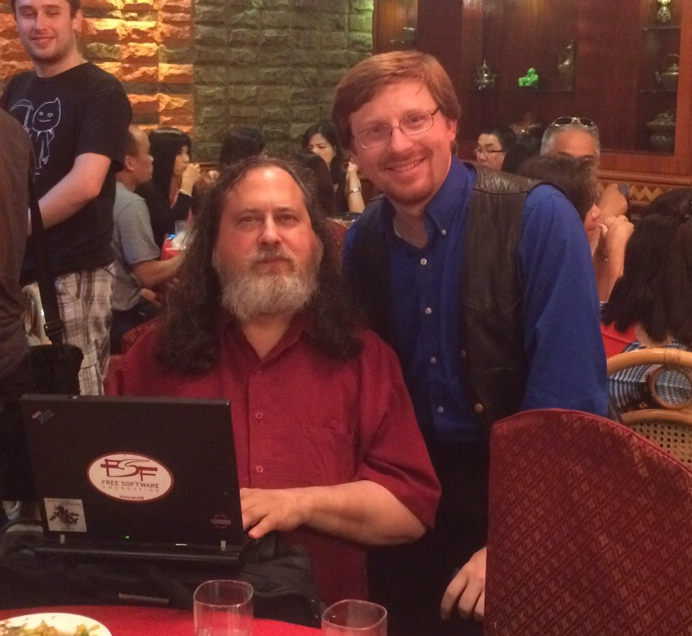
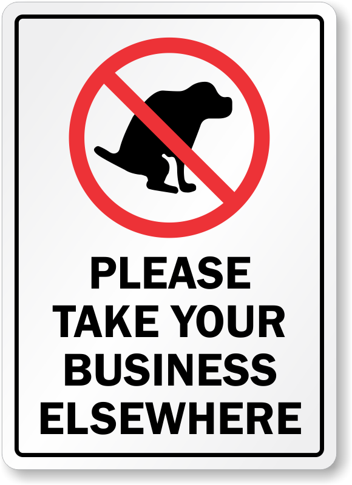
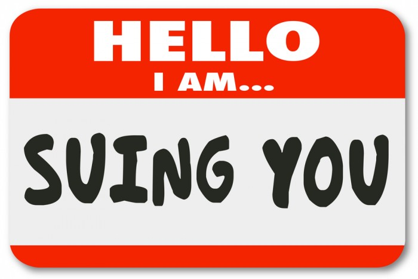

Platform.sh
Why Free Software?
Presented by Larry Garfield (@Crell)
@Crell

- D.R.I.E.S., Platform.sh
- 10 years consulting with Palantir.net
- Drupal 8 Web Services Lead
- Core Committee, PHP-FIG
implements Huggable
Why?
What is Open Source, anyway?
Free Software, 1984
- The freedom to run the program as you wish, for any purpose.
- The freedom to study how the program works, and change it so it does your computing as you wish.
- The freedom to redistribute copies so you can help your neighbor.
- The freedom to distribute copies of your modified versions to others.
Use, Learn, Improve, Share
Free Software Foundation, 1985

Richard Stallman, 2015
GNU's Not Unix
"Open Source", late 90s

So what is Free Software?
- Use is unrestricted
- Respects your sovereignty and independence
- Collaboration is encouraged
Benefits of Free Software
- Ethical
- Economic
- Security
Ethical benefits
If the users don’t control the program, the program controls the users.
—Richard Stallman, "Free Software, Free Society", Page 30
1st Moral Principle of the web
When a computer receives conflicting instructions from its owner and from a remote party, the owner always wins.
—Cory Doctorow, Former EFF Director
Government?
In a democracy, the people own the government
The people own the government's code already
Public agencies exist for the people, not for themselves. When they do computing, they do it for the people. They have a duty to maintain full control over that computing so that they can assure it is done properly for the people.
—Richard Stallman, "Free Software, Free Society", Page 31
»Why would anyone pay programmers to work on free software?«
— ❦ (@daniel_bohrer) January 1, 2017
»I don't understand. Why would anyone pay workers to build public roads?«
Economic benefits
What is your business?
Tip: It's probably not software
The most radical possible solution for constructing software is not to
construct it at all.
—Fred Brooks, No Silver Bullet, 1986
Author, The Mythical Man-Month
The way to be more productive is to write less code
The way to be more productive is to share more code
Per-item licensing restricts
development options
What motivates developers?
For many developers, peer review and acclaim is important, so it's likely that they will prefer to build software that is admired by their peers. Highly prized factors are clean design, reliability and maintainability, with adherence to standards and shared community values preeminent.
—Benefits of Using Open Source Software, GBDirect
Open Source Syndrome
Most open source projects subconsciously evolve to be interesting and desireable for developers first, then everyone else second. Editors and marketers are often the second-class citizen in these cases.
—Web Content Management by Deane Barker
Commercial Software Syndrome
Many proprietary CMSs have very polished demos, but that polish is only skin deep. The slick UI hides a lack of underlying power and flexibility—crucial power and flexibility that open source developers find interesting to work on.
—Me, as quoted in Web Content Management by Deane Barker
"Take your business elsewhere"

But who will I sue?

You didn't read your EULA...
But who will I call at 2 am?
Whoever you're paying to be awake at 2 am.
Security benefits
Popular Open Source software tends to be secure because insecure Open Source software tends to get unpopular fast.
—Chris Messina, Google, inventor of #Hashtags, DrupalCon DC, 2009
Why is there a copy of Doom in my spreadsheet?
The Hall of Tortured Souls
Proprietary software has no security at all in one crucial case—against its developer. And the developer may help others attack. Microsoft shows Windows bugs to the NSA (the US government digital spying agency) before fixing them.
—"Free Software, Free Society", Page 31, Richard Stallman
Source: Sean Gallagher, "NSA Gets Early Access to Zero-Day Data from Microsoft, Others," 14 June 2013
Linus' Law
Given enough eyeballs, all bugs are shallow
Only true for malicious code
Anyone can audit the code; not everyone does.
Diffusion of Responsibility
Fix your own bugs malicious code
Security is a process, not a product
... the only way to effectively do business in an insecure world is to put processes in place that recognize the inherent insecurity in the products.
—Bruce Schneider, Security researcher, CTO of Resilient, 2000
I consider the Drupal security team one of the best I've encountered in OSS. They are on the ball, quick to respond, and know their stuff. In general, Drupal is far more secure for it. They promote good practices (in general).
—Anthony Ferrara, Google and NBC Universal, after Drupalgeddon
Case study: Kaltura module (c. 2010)
Fight Diffusion of Responsibility
If you're not paying for it, you are the product.
If you're not paying for it, I don't care what you think
("Pay" doesn't always mean money)
Free Software is a Gift Economy
Developer time
Time is the currency of Free Software
- Review more code than you write!
- Fix more bugs than you add features!
Help with more than just code
Documentation
Usability/UX
Graphic design
Web site
Events
Engage the developer
Many maintainers are freelancers
Hire the/a developer
This does not give you absolute control!
If it's business critical, you need full time staff.
Pay for an audit
Be invested
Free Software is not about getting cheap stuff
Free Software isn't a license, it's a culture
Participation culture, not Permission culture
Free Software is interactive
If you don't interact, you don't matter
Pay It Forward
Free Software is only as awesome as you are
Larry Garfield
Director of Runtimes and Integrations Platform.sh
Continuous Deployment Cloud Hosting
Stalk us at @PlatformSH